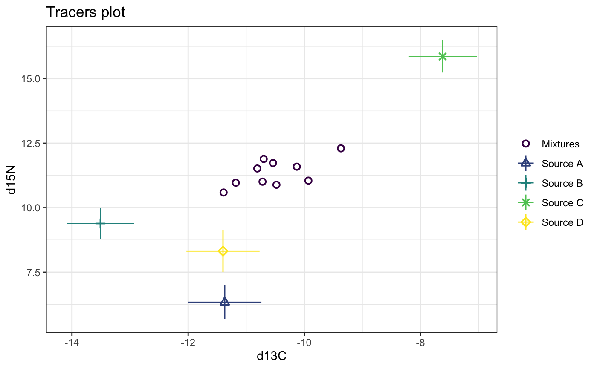
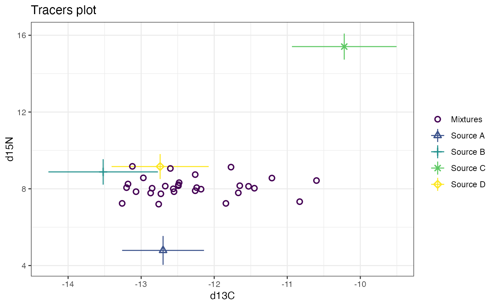
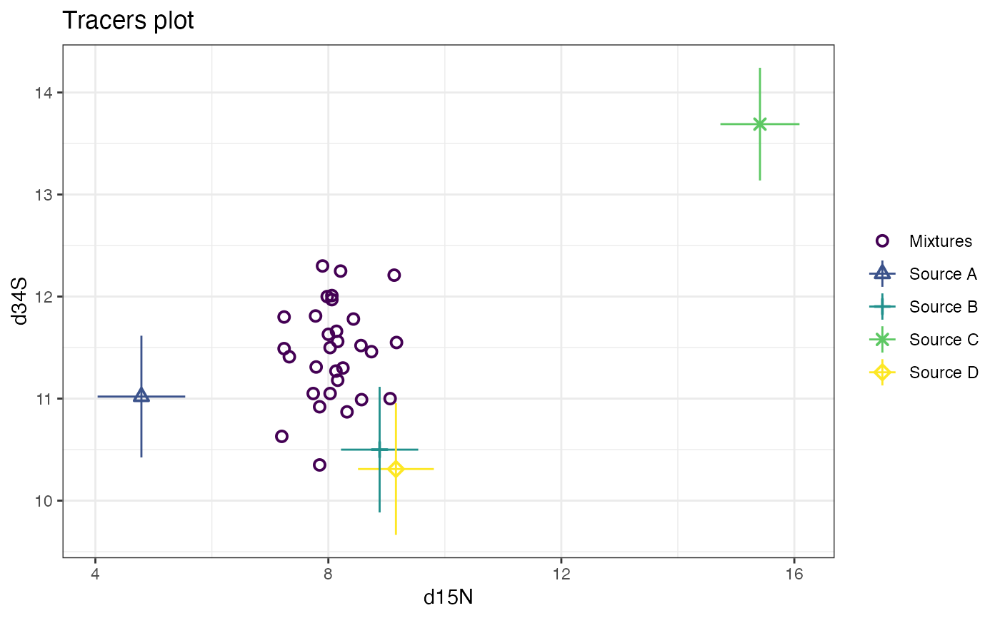
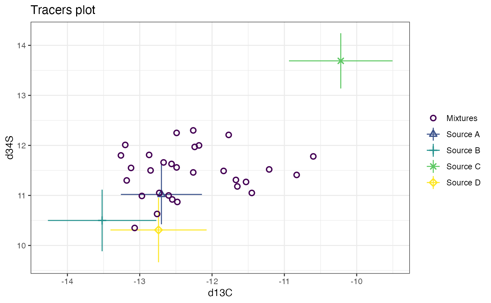
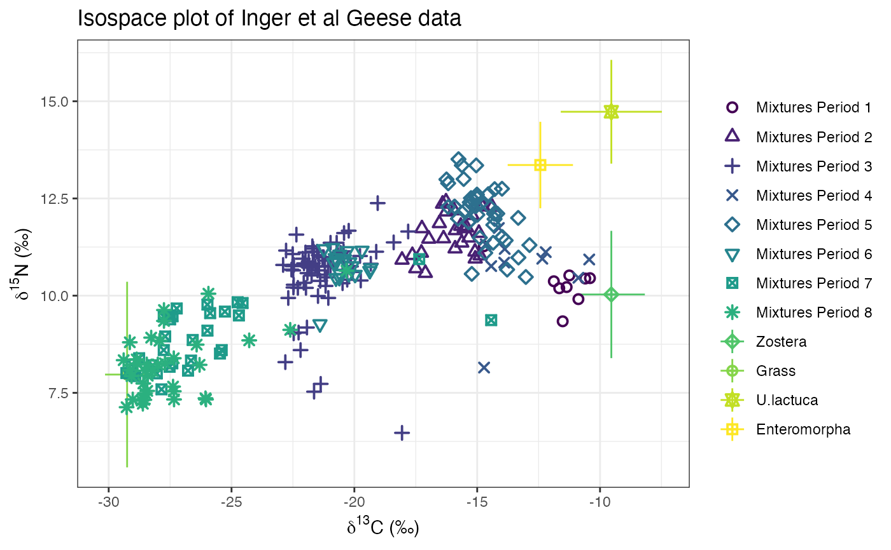

This function creates iso-space (AKA tracer-space or delta-space) plots. They are vital in determining whether the data are suitable for running in a SIMM.
# S3 method for simmr_input plot( x, tracers = c(1, 2), title = "Tracers plot", xlab = colnames(x$mixtures)[tracers[1]], ylab = colnames(x$mixtures)[tracers[2]], sigmas = 1, group = 1, mix_name = "Mixtures", ggargs = NULL, colour = TRUE, ... )
| x | An object created via the function |
|---|---|
| tracers | The choice of tracers to plot. If there are more than two tracers, it is recommended to plot every pair of tracers to determine whether the mixtures lie in the mixing polygon defined by the sources |
| title | A title for the graph |
| xlab | The x-axis label. By default this is assumed to be delta-13C but can be made richer if required. See examples below. |
| ylab | The y-axis label. By default this is assumed to be delta-15N in per mil but can be changed as with the x-axis label |
| sigmas | The number of standard deviations to plot on the source values. Defaults to 1. |
| group | Which groups to plot. Can be a single group or multiple groups |
| mix_name | A optional string containing the name of the mixture objects, e.g. Geese. |
| ggargs | Extra arguments to be included in the ggplot (e.g. axis limits) |
| colour | If TRUE (default) creates a plot. If not, puts the plot in black and white |
| ... | Not used |
It is desirable to have the vast majority of the mixture observations to be inside the convex hull defined by the food sources. When there are more than two tracers (as in one of the examples below) it is recommended to plot all the different pairs of the food sources. See the vignette for further details of richer plots.
See plot.simmr_output for plotting the output of a
simmr run. See simmr_mcmc for running a simmr object once the
iso-space is deemed acceptable.
# A simple example with 10 observations, 4 food sources and 2 tracers mix = matrix(c(-10.13, -10.72, -11.39, -11.18, -10.81, -10.7, -10.54, -10.48, -9.93, -9.37, 11.59, 11.01, 10.59, 10.97, 11.52, 11.89, 11.73, 10.89, 11.05, 12.3), ncol=2, nrow=10) colnames(mix) = c('d13C','d15N') s_names=c('Source A','Source B','Source C','Source D') s_means = matrix(c(-14, -15.1, -11.03, -14.44, 3.06, 7.05, 13.72, 5.96), ncol=2, nrow=4) s_sds = matrix(c(0.48, 0.38, 0.48, 0.43, 0.46, 0.39, 0.42, 0.48), ncol=2, nrow=4) c_means = matrix(c(2.63, 1.59, 3.41, 3.04, 3.28, 2.34, 2.14, 2.36), ncol=2, nrow=4) c_sds = matrix(c(0.41, 0.44, 0.34, 0.46, 0.46, 0.48, 0.46, 0.66), ncol=2, nrow=4) conc = matrix(c(0.02, 0.1, 0.12, 0.04, 0.02, 0.1, 0.09, 0.05), ncol=2, nrow=4) simmr_1 = simmr_load(mixtures=mix, source_names=s_names, source_means=s_means, source_sds=s_sds, correction_means=c_means, correction_sds=c_sds, concentration_means = conc) # Plot plot(simmr_1)### A more complicated example with 30 obs, 3 tracers and 4 sources mix = matrix(c(-11.67, -12.55, -13.18, -12.6, -11.77, -11.21, -11.45, -12.73, -12.49, -10.6, -12.26, -12.48, -13.07, -12.67, -12.26, -13.12, -10.83, -13.2, -12.24, -12.85, -11.65, -11.84, -13.26, -12.56, -12.97, -12.18, -12.76, -11.53, -12.87, -12.49, 7.79, 7.85, 8.25, 9.06, 9.13, 8.56, 8.03, 7.74, 8.16, 8.43, 7.9, 8.32, 7.85, 8.14, 8.74, 9.17, 7.33, 8.06, 8.06, 8.03, 8.16, 7.24, 7.24, 8, 8.57, 7.98, 7.2, 8.13, 7.78, 8.21, 11.31, 10.92, 11.3, 11, 12.21, 11.52, 11.05, 11.05, 11.56, 11.78, 12.3, 10.87, 10.35, 11.66, 11.46, 11.55, 11.41, 12.01, 11.97, 11.5, 11.18, 11.49, 11.8, 11.63, 10.99, 12, 10.63, 11.27, 11.81, 12.25), ncol=3, nrow=30) colnames(mix) = c('d13C','d15N','d34S') s_names = c('Source A', 'Source B', 'Source C', 'Source D') s_means = matrix(c(-14, -15.1, -11.03, -14.44, 3.06, 7.05, 13.72, 5.96, 10.35, 7.51, 10.31, 9), ncol=3, nrow=4) s_sds = matrix(c(0.46, 0.39, 0.42, 0.48, 0.44, 0.37, 0.49, 0.47, 0.49, 0.42, 0.41, 0.42), ncol=3, nrow=4) c_means = matrix(c(1.3, 1.58, 0.81, 1.7, 1.73, 1.83, 1.69, 3.2, 0.67, 2.99, 3.38, 1.31), ncol=3, nrow=4) c_sds = matrix(c(0.32, 0.64, 0.58, 0.46, 0.61, 0.55, 0.47, 0.45, 0.34, 0.45, 0.37, 0.49), ncol=3, nrow=4) conc = matrix(c(0.05, 0.1, 0.06, 0.07, 0.07, 0.03, 0.07, 0.05, 0.1, 0.05, 0.12, 0.11), ncol=3, nrow=4) # Load this in: simmr_3 = simmr_load(mixtures=mix, source_names=s_names, source_means=s_means, source_sds=s_sds, correction_means=c_means, correction_sds=c_sds, concentration_means = conc) # Plot 3 times - first default d13C vs d15N plot(simmr_3)# See vignette('simmr') for fancier x-axis labels # An example with multiple groups - the Geese data from Inger et al 2006 # Do this in raw data format - Note that there's quite a few mixtures! mix = matrix(c(-11.36, -11.88, -10.6, -11.25, -11.66, -10.41, -10.88, -14.73, -11.52, -15.89, -14.79, -17.64, -16.97, -17.25, -14.77, -15.67, -15.34, -15.53, -17.27, -15.63, -15.94, -14.88, -15.9, -17.11, -14.93, -16.26, -17.5, -16.37, -15.21, -15.43, -16.54, -15, -16.41, -15.09, -18.06, -16.27, -15.08, -14.39, -21.45, -22.52, -21.25, -21.84, -22.51, -21.97, -20.23, -21.64, -22.49, -21.91, -21.65, -21.37, -22.9, -21.13, -19.33, -20.29, -20.56, -20.87, -21.07, -21.69, -21.17, -21.74, -22.69, -21.06, -20.42, -21.5, -20.15, -21.99, -22.3, -21.71, -22.48, -21.86, -21.68, -20.97, -21.91, -19.05, -22.78, -22.36, -22.46, -21.52, -21.84, -21.3, -21.39, -22.1, -21.59, -20.14, -20.67, -20.31, -20.07, -21.2, -20.44, -22.06, -22.05, -21.44, -21.93, -22.47, -22.27, -22.19, -22.81, -20.48, -22.47, -18.06, -20.72, -20.97, -19.11, -18.4, -20.45, -21.2, -19.74, -20.48, -21.48, -17.81, -19.77, -22.56, -14.72, -12.21, -12.35, -13.88, -14.43, -14.65, -13.9, -14.12, -10.88, -10.44, -15.33, -13.78, -13.98, -15.22, -15.25, -15.76, -15.78, -15.49, -13.02, -15.3, -15.55, -14.35, -14.99, -14.83, -16.18, -15.01, -12.87, -14.67, -13.84, -14.89, -13.33, -15.04, -14.29, -15.62, -13.99, -15.06, -15.06, -15, -14.55, -13.32, -14.34, -14.47, -14.31, -14.18, -16.18, -16.25, -15.92, -15.35, -14.29, -15.92, -15.35, -20.22, -21.4, -19.97, -20.78, -20.61, -20.58, -20.19, -20.71, -20.59, -20.09, -19.37, -20.41, -20.84, -20.75, -20.29, -20.89, -19.69, -20.41, -21.24, -19.33, -25.87, -25.4, -27.23, -27.52, -24.55, -17.36, -24.7, -27.76, -28.92, -25.98, -26.77, -28.76, -27.7, -24.75, -25.47, -26.58, -28.94, -29.13, -26.65, -28.04, -27.5, -29.28, -27.85, -27.41, -27.57, -29.06, -25.98, -28.21, -25.27, -14.43, -27.4, -27.76, -28.45, -27.35, -28.83, -29.39, -28.86, -28.61, -29.27, -20.32, -28.21, -26.3, -28.27, -27.75, -28.55, -27.38, -29.13, -28.66, -29.02, -26.04, -26.06, -28.52, -28.51, -27.93, -29.07, -28.41, -26.42, -27.71, -27.75, -24.28, -28.43, -25.94, -28, -28.59, -22.61, -27.34, -27.35, -29.14, 10.22, 10.37, 10.44, 10.52, 10.19, 10.45, 9.91, 11.27, 9.34, 11.68, 12.29, 11.04, 11.46, 11.73, 12.29, 11.79, 11.49, 11.73, 11.1, 11.36, 12.19, 11.03, 11.21, 10.58, 11.61, 12.16, 10.7, 11.47, 12.07, 11.75, 11.86, 12.33, 12.36, 11.13, 10.92, 12.42, 10.95, 12.28, 11.04, 10.76, 10.99, 10.78, 11.07, 10.2, 11.67, 7.53, 10.65, 10.58, 11.13, 7.73, 10.79, 10.47, 10.82, 10.41, 11.1, 10.95, 10.76, 10.83, 10.25, 10.52, 9.94, 9.94, 11.61, 10.65, 10.76, 11.11, 10.2, 11.27, 10.21, 10.88, 11.21, 11.36, 10.75, 12.38, 11.16, 11.57, 10.79, 11.13, 10.72, 10.99, 10.38, 10.95, 10.75, 10.75, 11.05, 10.66, 10.61, 10.9, 11.14, 10.33, 10.83, 10.75, 9.18, 9.03, 9.05, 8.6, 8.29, 10.32, 10.28, 6.47, 11.36, 10.75, 11.13, 11.37, 10.86, 10.54, 10.39, 10.66, 9.99, 11.65, 11.02, 10.67, 8.15, 11.12, 10.95, 11.2, 10.76, 11.32, 10.85, 11.74, 10.46, 10.93, 12.3, 10.67, 11.51, 10.56, 12.51, 13.51, 11.98, 12.2, 10.48, 12.4, 13, 11.36, 12.08, 12.39, 12.28, 12.6, 11.3, 11.1, 11.42, 11.49, 12, 13.35, 11.97, 13.35, 12.75, 12.55, 12.3, 12.51, 12.61, 10.98, 11.82, 12.27, 12.11, 12.11, 12.89, 12.99, 12.29, 11.89, 12.74, 12.29, 11.89, 10.56, 9.27, 10.54, 10.97, 10.46, 10.56, 10.86, 10.9, 11.06, 10.76, 10.64, 10.94, 10.85, 10.45, 11.15, 11.23, 11.16, 10.94, 11.2, 10.71, 9.55, 8.6, 9.67, 8.17, 9.81, 10.94, 9.49, 9.46, 7.94, 9.77, 8.07, 8.39, 8.95, 9.83, 8.51, 8.86, 7.93, 8, 8.33, 8, 9.39, 8.01, 7.59, 8.26, 9.49, 8.23, 9.1, 8.21, 9.59, 9.37, 9.47, 8.6, 8.23, 8.39, 8.24, 8.34, 8.36, 7.22, 7.13, 10.64, 8.06, 8.22, 8.92, 9.35, 7.32, 7.66, 8.09, 7.3, 7.33, 7.33, 7.36, 7.49, 8.07, 8.84, 7.93, 7.94, 8.74, 8.26, 9.63, 8.85, 7.55, 10.05, 8.23, 7.74, 9.12, 7.33, 7.54, 8.8), ncol=2, nrow=251) colnames(mix) = c('d13C','d15N') s_names = c("Zostera", "Grass", "U.lactuca", "Enteromorpha") s_means = matrix(c(-11.17, -30.88, -11.17, -14.06, 6.49, 4.43, 11.19, 9.82), ncol=2, nrow=4) s_sds = matrix(c(1.21, 0.64, 1.96, 1.17, 1.46, 2.27, 1.11, 0.83), ncol=2, nrow=4) c_means = matrix(c(1.63, 1.63, 1.63, 1.63, 3.54, 3.54, 3.54, 3.54), ncol=2, nrow=4) c_sds = matrix(c(0.63, 0.63, 0.63, 0.63, 0.74, 0.74, 0.74, 0.74), ncol=2, nrow=4) conc = matrix(c(0.36, 0.4, 0.21, 0.18, 0.03, 0.04, 0.02, 0.01), ncol=2, nrow=4) grp = as.integer(c(1, 1, 1, 1, 1, 1, 1, 1, 1, 2, 2, 2, 2, 2, 2, 2, 2, 2, 2, 2, 2, 2, 2, 2, 2, 2, 2, 2, 2, 2, 2, 2, 2, 2, 2, 2, 2, 2, 3, 3, 3, 3, 3, 3, 3, 3, 3, 3, 3, 3, 3, 3, 3, 3, 3, 3, 3, 3, 3, 3, 3, 3, 3, 3, 3, 3, 3, 3, 3, 3, 3, 3, 3, 3, 3, 3, 3, 3, 3, 3, 3, 3, 3, 3, 3, 3, 3, 3, 3, 3, 3, 3, 3, 3, 3, 3, 3, 3, 3, 3, 3, 3, 3, 3, 3, 3, 3, 3, 3, 3, 3, 3, 4, 4, 4, 4, 4, 4, 4, 4, 4, 4, 5, 5, 5, 5, 5, 5, 5, 5, 5, 5, 5, 5, 5, 5, 5, 5, 5, 5, 5, 5, 5, 5, 5, 5, 5, 5, 5, 5, 5, 5, 5, 5, 5, 5, 5, 5, 5, 5, 5, 5, 5, 6, 6, 6, 6, 6, 6, 6, 6, 6, 6, 6, 6, 6, 6, 6, 6, 6, 6, 6, 6, 7, 7, 7, 7, 7, 7, 7, 7, 7, 7, 7, 7, 7, 7, 7, 7, 7, 7, 7, 7, 7, 7, 7, 7, 7, 7, 7, 7, 7, 7, 7, 7, 8, 8, 8, 8, 8, 8, 8, 8, 8, 8, 8, 8, 8, 8, 8, 8, 8, 8, 8, 8, 8, 8, 8, 8, 8, 8, 8, 8, 8, 8, 8, 8, 8, 8, 8, 8)) # Load this in: simmr_4 = simmr_load(mixtures=mix, source_names=s_names, source_means=s_means, source_sds=s_sds, correction_means=c_means, correction_sds=c_sds, concentration_means = conc, group=grp) # Print simmr_4#> This is a valid simmr input object with 251 observations, 2 tracers, and 4 sources. #> There are 8 groups. #> The source names are: Zostera, Grass, U.lactuca, Enteromorpha. #> The tracer names are: d13C, d15N. #>